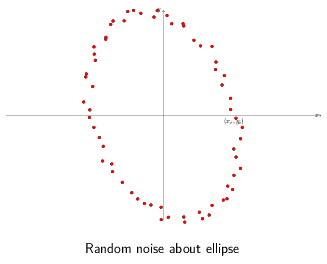
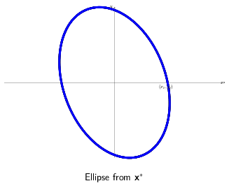
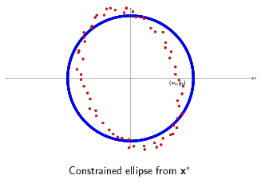

In our examples heretofore we’ve been assuming that each measurement - each row in \(\textbf{y}\) - has equal accuracy. But sometimes we know that some measurements (and hence data points) are more reliable than others. To bias the final \(\textbf{x}^*\) to work harder to minimize the error for those measurements, we can add a weight to equations that calculate the residual.
Consider the sum of squares error \(E^2 = \sum_i^n (y_i-a_i x_i)^2\). Weighting the individual datapoints consists of multiplying each equation with an additional paramters, \(w_i\), such that \(w_i > w_j\) implies that we have more confidence in data point \(i\) than \(j\). Ultimately this gives us \(E^2 = \sum_i^n w_i (y_i-a_i x_i)^2\), or in matrix form this is equivalent to \((\textbf{y}-Ax)^T W (\textbf{y}-Ax)\) where
\(W = \begin{pmatrix} w_1 & 0 & \cdots \\ 0 & w_2 & \cdots \\ & \ddots & \\ \cdots & \cdots & w_3 \\ \end{pmatrix}\).
Performing least squares with a change of variables, \(\tilde{A} = AW\), \(\tilde{\textbf{y}} = W\textbf{y}\) gives us the weighted normal equations:
\((\tilde{A}^T\tilde{A})\textbf{x} =\tilde{A}^T\tilde{\textbf{b}}\).
\((A^TW^TWA)\textbf{x} =A^TW^TW\textbf{b}\).
Alternatively, equating the derivative of the residual to 0, \(\frac{dE^2}{d\textbf{x}}=0\), will produce the same equations.
All the examples we’ve been looking at so far have been unconstrained: there are no restrictions on the values that \(\textbf{x}\) can take. We can add equality constraints to our \(\min |A\textbf{x}=\textbf{y}|^2\) easily, that is, with an analytic solution. (From Optimization models and applications):
We express our equality constraints as the equation \(C\textbf{x} = \textbf{d}\). Assume that there is at least one feasible solution \(\textbf{x}_0\) for \(C\textbf{x}=d\). Any attempt to move \(\textbf{x}\) for the purpose of minimizing \(|A\textbf{x}=\textbf{y}|^2\) by some vector \(\textbf{s}\) must result in \(C(\textbf{x}_0 + \textbf{s}) = \textbf{d} \implies C\textbf{x}_0 + C\textbf{s} = \textbf{d}\) to be correct. Since we must match \(C\textbf{x}_0 = \textbf{d}\) exactly, \(C\textbf{s}\) must be 0. Any attempt to change \(\textbf{x}\) must occur along the nullspace of \(C\).
Let \(N\) be the nullspace of \(C\). We can rephrase the above by saying we’re looking to minimize \(|A\textbf{x}=\textbf{y}|^2\) where \(\textbf{x} = \textbf{x}_0 + N\textbf{z}\), \(\textbf{z}\) is an arbitrary vector. Therefore the problem changes to minimize \(|\tilde{A}\textbf{z}=\tilde{\textbf{y}}|^2\) where \(\tilde{A}=AN\) and \(\tilde{y}=y-A\textbf{x}_0\). At this point we can plug our equation into our familiar normal equations and derive \(\textbf{x}\).

Here’s an example adapted from Flavio Truzzi’s article on Least Squares. Take these set of data points which were generated by adding random noise about the ellipse \(\frac{1}{2}x^2 + \frac{1}{3}x^2 = 1\) rotated by 20 degrees.
As a reminder there are multiple representations of the same ellipse. Truzzi uses the parametric form of a rotated ellipse. About the origin, the parameteric form is:
\(x(t) = a\ cos(t) cos(\theta) - b\ sin(t) sin(\theta)\)
\(y(t) = a\ cos(t) sin(\theta) + b\ sin(t) cos(\theta)\)
in this specific case,
\(x(t) = 2\ cos(t) cos(20^°) - 3\ sin(t) sin(20^°)\)
\(y(t) = 2\ cos(t) sin(20^°) + 3\ sin(t) cos(20^°)\)
In standard form the coefficients are \(\frac{1}{a}\), \(\frac{1}{b}\) respectively.
Solving the general case provides values for \(a\ cos(\theta)\) and \(b\ sin(\theta)\), which is less than ideal. More problematic, it requires solving two least squares problems, one for x and y separately. In order to limit the solution with equality constraints we need to solve them together. Thankfully we can avoid these problems using the quadratic form of the same ellipse.
\(a'x^2 + b'xy + c'y^2 = 1\)
\(a'\), \(b'\), and \(c'\) are related to the \(a\), \(b\) and the angle of rotation in the parametric representation by a set of formulas described in Charles F. Van Loan in Using the ellipse to fit and enclose data points.
Given a set of \(x\), \(y\) data points, we can reconstruct \(a'\), \(b'\), and \(c'\) by the following \(A\) and \(\textbf{b}\) least squares setup:

\(\begin{pmatrix} x_1^2 & x_1y_1 & y_1^2 \\ x_2^2 & x_2y_2 & y_2^2 \\ \cdots \\ x_n^2 & x_ny_n & y_n^2 \\ \end{pmatrix} \begin{pmatrix}a' \\ b' \\ c'\end{pmatrix} = \begin{pmatrix}1 \\ 1 \\ \cdots \\ 1\end{pmatrix}\)
Converting back to parametric form gives us our original values for \(a\) and \(b\). We also get the angle of rotation factored individually. Pretty nice!
Now onto equality constraints. Let’s say we wanted to restrict out solutions to those where \(a = b\). In other words we’re looking for the circle that best fits this group of points.
In matrix form, this constraint is expressed as \(\begin{pmatrix}1 & 0 & -1 \\ 0 & 1 & 0\end{pmatrix} \textbf{x} = \textbf{0}\). The middle unknown multiplies \(xy\) and is responsible for the rotation, which we’ve set to unconditionally equal 0 with the second row. The first row states we want the coefficients for \(x^2\) and \(y^2\) to be equal. The nullspace of our constraint matrix, \(N\), is \(\begin{pmatrix}1 \\ 0 \\ 1\end{pmatrix}\).

By inspection, a feasible solution for \(x_0\) is \(\begin{pmatrix}1 \\ 0 \\ 1\end{pmatrix}\). Thus the optimal solution can be found via least squares with \(A N = \begin{pmatrix} x_1^2 + y_1^2 \\ \cdots \\ x_n^2 + y_n^2 \\ \end{pmatrix}\), \(\tilde{\textbf{b}} = \textbf{b} - A\textbf{x}_0 = \begin{pmatrix} b_1 - x_1^2 + y_1^2 \\ \cdots \\ b_n - x_n^2 + y_n^2\end{pmatrix}\).
Since the arrived at solution is not for \(\textbf{x}\) directly but \(\textbf{z}\), our final solution \(\textbf{x}\) will be \(\textbf{x}_0 + N\textbf{z}\).